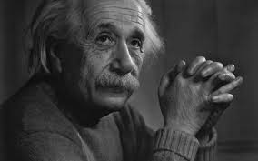

<div class="about">
  
  <div class="description">
    <p>
      Albert Einstein was a German-born theoretical 
      physicist who is widely held as one of the most 
      influential scientists. Best known for developing 
      the theory of relativity, Einstein also made important 
      contributions to quantum mechanics.
    </p>

    <p>Born: 14 March 1879</p>

    <p>Died: 18 April 1955</p>

    <p>Spouse: Mileva Maric (m. 1903 - 1919), Elsa Einstein (m. 1919 - 1936)</p>

    <p>Education: University of Zurich</p>

    <p>Children: Eduard Einstein, Hans Albert Einstein, Lieseri Einstein</p>

    <p>Influenced: Stephen Hawking, Satyendra Nath Bose</p>
  </div>
</div>